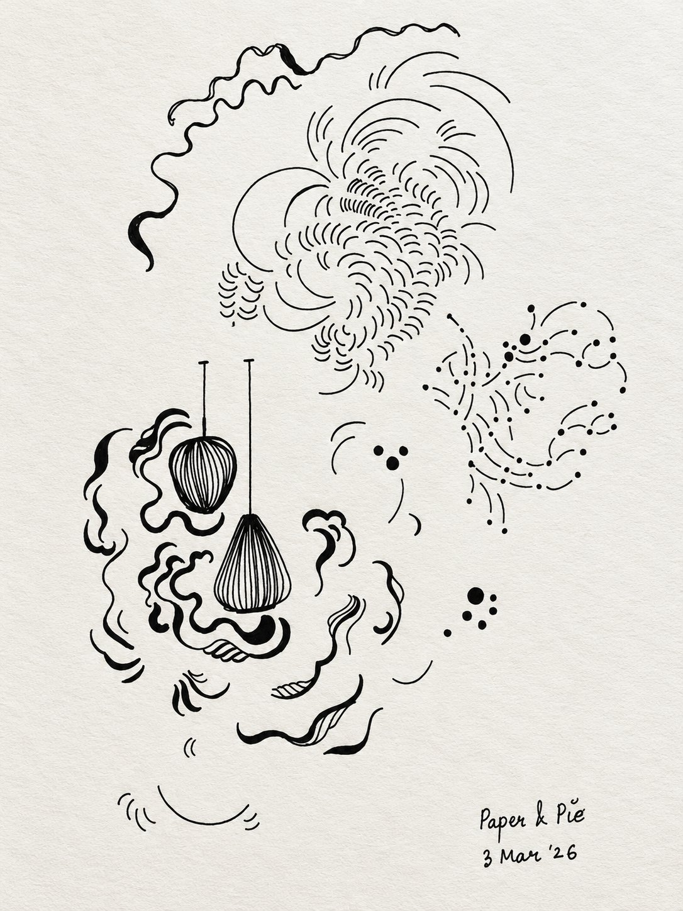

Paper & Pie
- Me
- Music
- People chatting
- People talking
- Clattering utensils
- Running water
- Cutlery

In the distance, a cluster of beautifully suspended lamps catches my eye. A ceiling spotlight illuminates my notebook and the little space I occupy. I imagine myself as one of those lamps, suspended above, quietly observing the atmosphere.
As I begin listening, the space unfolds in layers of sound. Music drifts through the room, initially blending into the background, then growing more distinct as my attention settles upon it. The delicate clinking of cutlery punctuates the melody, while occasional conversations rise and dissolve into the ambient hum.
Most visitors remain absorbed in their laptops, leaving the room unusually quiet. Yet, beneath this stillness, another soundscape emerges from downstairs—overlapping chatter, rhythmic clattering of utensils, and the continuous murmur of running water.
I translate these fleeting sounds into clouds, ripples, dots, and flowing lines, mapping not merely what I hear, but how attention transforms the experience of listening.